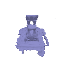

**Part 4: Neural Surface Rendering**
Previous |
Home |
Next
# Sphere Tracing
First we implement differentiable [sphere tracing](https://www.researchgate.net/publication/2792108_Sphere_Tracing_A_Geometric_Method_for_the_Antialiased_Ray_Tracing_of_Implicit_Surfaces)
for rendering a SDF so that we can use it to render a simple torus.
Sphere tracing (also known as "ray marching" or "sphere marching") is a tracing algorithm to render complex 3D geometries.
It works by casting rays from a camera and tracing their path through the scene until they intersect with an object or surface.
In traditional ray tracing, the intersection point is computed by testing every object in the scene against the ray, which can be computationally expensive.
Sphere tracing, on the other hand, uses a more efficient method that takes advantage of the fact that most scenes are empty space.
The basic idea of sphere tracing is to imagine a sphere centered at the starting point of the ray, which expands along the ray's path until it intersects with an object in the scene.
The intersection point is then used as the new starting point for the next sphere, which expands along the new ray direction until it hits another object, and so on.
This process is repeated until the ray either hits a light source or reaches the maximum number of iterations allowed.
In our implementation, we use a the implicit signed distance function to obtain the distance from a point to the surface of the object.
The distance is then used to offset the starting point of the next sphere along the ray's path in an iterative manner, until max iterations is reached or the distance is less than a specified epsilon value.
A final mask is computed to indiciate whether the ray hit the object or not.
The following visualization shows the result of rendering a torus with a sphere tracer:

# Optimizing a Neural SDF
We implement a MLP architecture for a neural SDF, and train this neural SDF on point cloud data.
This is done by training the network to output a zero value at the observed points.
The loss function used for optimizing the neural SDF is MSE loss between the output of the neural SDF and the expected value of 0.
To encourage the network to learn an SDF instead of an arbitrary function,
we also use eikonal regularization which enforces the gradients to have unit length.
This is done by adding the MSE loss between the gradient norm of the neural SDF and the expected value of 1.
The following visualization shows the result of training a neural SDF to fit a bunny point cloud:
Bunny Point Cloud | Optimized Neural SDF
:---:|:---:
 |
|
# VolSDF
We implmeent a function converting SDF to volume density. We extend the MLP architecture to predict color.
Color prediction is done by adding a fully connected layer with sigmoid activation to the output of the Neural SDF MLP implemented above.
SDF to density is done by implementing the Cumulative Distribution Function (CDF) of the Laplace distribution as described in section 3.1 of [VolSDF](https://arxiv.org/pdf/2106.12052.pdf).
There are two parameters in the CDF:
- `alpha`: Scaling factor for the CDF of the Laplace distribution
- `beta`: Mean aboslute deviation of the Laplace distribution
Let's answer the following questions:
1. How does high `beta` bias your learned SDF? What about low `beta`?
- High `beta` biases the learned SDF to be more smooth, while low `beta` biases the learned SDF to be more sharp.
Thus, high `beta` biases the learned SDF to be more regularized, while low `beta` biases the learned SDF to be more accurate.
2. Would an SDF be easier to train with volume rendering and low `beta` or high `beta`? Why?
- An SDF would be easier to train with high `beta` because the volume rendering is more regularized and thus easier to train.
3. Would it be more likely to learn an accurate surface with high `beta` or low `beta`? Why?
- It would be more likely to learn an accurate surface with low `beta` because the density will be sharper and thus more accurate.
The result of training an SDF on the lego bulldozer model is shown below.
The optimized `alpha` and `beta` are 13.7206 and 0.0172 respectively,
by setting `alpha` and `beta` to be optimized parameters during training.
Parameters
(`alapha`, `beta`) | Appearance | Geometry
:---:|:---:|:---:
**Default**
`alpha`=10.0
`beta`=0.05 | | 
**Optimized**
`alpha`=13.7206
`beta`=0.0172 | |
# Phong Relighting
We implement the [Phong reflection model](https://en.wikipedia.org/wiki/Phong_reflection_model)
in order to render the SDF volume we trained under different lighting conditions.
In principle, the Phong model can handle multiple different light sources coming from different directions,
but for our implementation we assume we're working with a single directional light source.
The rendered volume under different lighting is shown below:
Appearance | Geometry
:---:|:---:
|
# Fewer Training Views
In section 3, we trained on 100 training views for a single scene.
A benefit of using surface representations, however, is that the geometry is better regularized
and can in principle be inferred from fewer views.
In this section, we experiment with using fewer training views including 25, 50, and 75 views.
The observation is that the geometry is still well reconstructed with fewer training views,
but the appearance is not as good as when using 100 training views.
Num Views | Appearance | Geometry
:---:|:---:|:---:
25 | |
50 | |  75 | |
100 | |
75 | |
100 | |